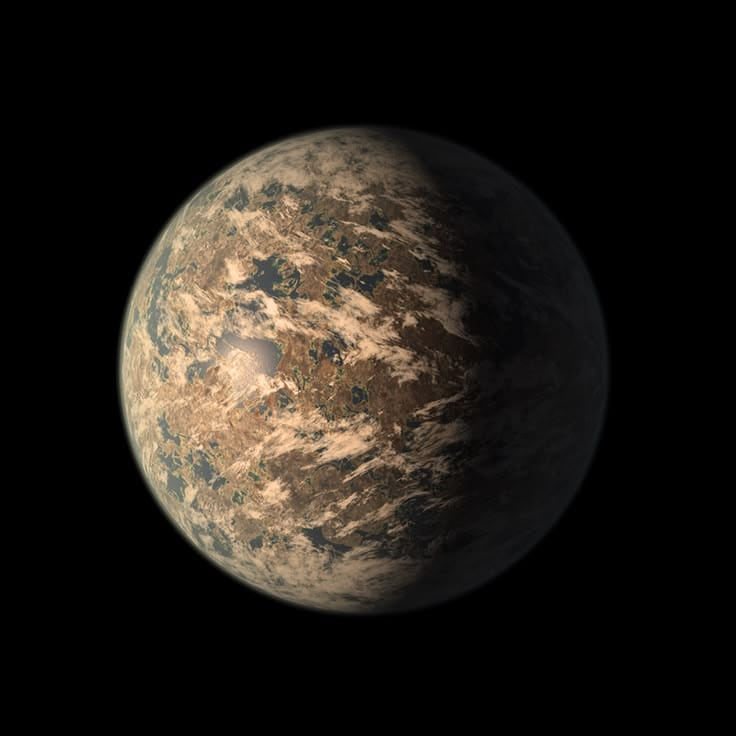

Planeta
TRAPPIST-1E es un planeta rocoso con un tamaño parecido al de la Tierra. Forma parte de un sistema con siete planetas conocidos.
CONOCE EL PLANETA
Explora la información más relevante sobre TRAPPIST-1E.
TRAPPIST-1E es un planeta rocoso con un tamaño parecido al de la Tierra. Forma parte de un sistema con siete planetas conocidos.
Se encuentra en la zona habitable de su estrella. Esto significa que, bajo ciertas condiciones atmosféricas, podría existir agua líquida en su superficie.
Su sistema se encuentra aproximadamente a 39 años luz. Ha sido estudiado con telescopios espaciales y observatorios terrestres.
Tabla informativa con encabezados, filas, columnas y celdas combinadas.
| Característica | Planetas | |
|---|---|---|
| TRAPPIST-1E | Tierra | |
| Tipo | Rocoso | Rocoso |
| Ubicación | Sistema TRAPPIST-1 | Sistema Solar |
| Zona habitable | Sí, respecto a su estrella | Sí, respecto al Sol |
| Posibilidad de agua líquida | Depende de las condiciones de la superficie y de la atmósfera de cada planeta. | |

TRAPPIST-1E tiene un tamaño similar al de la Tierra y es uno de los candidatos de su sistema que se estudian para comprender las condiciones de habitabilidad. Su posible atmósfera y las características de su superficie todavía son temas de investigación.
← RegresarSiguiente →